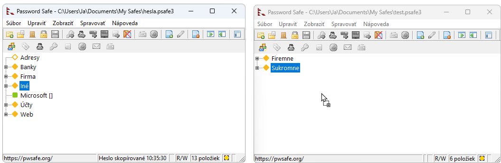
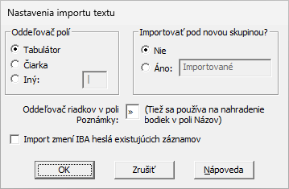

Password Safe vám umožňuje importovať informácie o heslách z iných formátov. Tieto súbory môžu byť generované inými aplikáciami, exportované z tabuľky alebo dokonca napísané ručne pomocou programu Poznámkový blok alebo podobného textového editora.
Formáty, ktoré Password Safe podporuje, sú:
Password Safe vygeneruje na konci importu správu/report, ktorá zhrnie vykonanú operáciu a zaznamená všetky problémy, ktoré sa vyskytli. Túto správu je možné skopírovať do schránky alebo uložiť na disk ako textový súbor v rovnakom adresári ako databáza. Položka menu "Zobraziť > Reporty" sa potom môže použiť na neskoršie zobrazenie existujúcich reportov. Názov súboru správy je pevne daný a závisí od operácie, ktorá ho vytvorila. Ak sa tá istá operácia zopakuje a jej správu uložíte na disk, existujúca správa pre túto operáciu bude prepísaná. Poznámka: Správa môže obsahovať citlivé údaje a pri výbere možnosti "Uložiť na disk" je potrebná zvýšená opatrnosť.
Poznámka: Podmnožinu záznamov môžete tiež "importovať" z inej databázy Password Safe. A to otvorením druhej databázy v inej inštancii programu (za predpokladu že povolíte viacero inštancií v Nastaveniach na karte "Systém"). Potom môžete jednoducho pomocou myši (Drag & Drop) skopírovať (presunúť podržaním Ctrl) ľubovoľné záznamy alebo celé skupiny do aktuálnej databázy z tejto druhej databázy.

Textové súbory používané na importovanie hesiel pozostávajú z jedného alebo viacerých hesiel. Každé pole v rámci jedného záznamu je oddelené oddeľovačom polí a každý záznam môže pozostávať z jedného alebo viacerých riadkov. Podrobnosti o očakávanom formáte importovaného textového súboru nájdete v časti "Formát exportu a importu obyčajného textu".
Oddeľovač polí použitý v importovanom textovom súbore a predvolený názov skupiny, do ktorej sa majú nové položky importovať, je možné nakonfigurovať ešte pred spracovaním súboru.

XML (eXtensible Markup Language) je populárny formát na prenos dát medzi aplikáciami. Password Safe dokáže importovať súbory XML, ktoré boli vygenerované podľa schémy definovanej v súbore pwsafe.xsd, ktorý je súčasťou inštalácie aplikácie.
Pri importe XML do prázdnej databázy sa všetky nastavenia databázy na začiatku vstupného súboru XML importujú do databázy. Ak aktuálna prijímajúca databáza už ale obsahuje záznamy, tieto nastavenia sa ignorujú.
Všetky "názvy zásad hesiel" vo vstupnom súbore XML sa však importujú bez ohľadu na to, či sa v aktuálnej prijímajúcej databáze už nachádzajú záznamy. Upozorňujeme však, že ak v databáze už existujú zásady hesiel s rovnakým názvom, nebudú prepísané hodnotami vo vstupnom súbore XML.
Ak sa importuje záznam, ktorý používa názov zásady hesiel a tento názov sa nenachádza ani v aktuálnej prijímajúcej databáze, ani vo vstupnom súbore XML, výsledný záznam v databáze sa vráti k používaniu predvolených zásad hesiel databázy.
Zmena kódovania hodnôt dátumu/času XML
Pred verziou Password Safe V3.26 sa polia dátumu a času exportovali v našom vlastnom formáte:
<name>
<date>yyyy-mm-dd</date>
<time>hh:mm:ss</time>
</name>
Kde "name" bolo ktorékoľvek z našich polí dátumu/času záznamu, napr. 'ctime', 'atime', 'xtime', 'pmtime', 'rmtime' a dátum/čas zmeny histórie hesiel.
Avšak, od verzie V3.26, PasswordSafe exportuje polia dátumu/času XML iba pomocou medzinárodného štandardného formátu dátumu/času W3C. Verzie V3.26 a V3.27 dokážu zadávať údaje v oboch formátoch, ale verzie od 3.27 akceptujú iba štandard W3C.
Štandard W3C pre polia dátumu/času XML je:
<namex>yyyy-mm-ddThh:mm:ss</namex>
Kde sme zmenili "name", aby sme odlíšili polia od starého formátu pridaním znaku "x" a tak "namex" predstavuje akékoľvek nové pole dátumu/času záznamu, napr. "ctimex", "atimex", "xtimex", "pmtimex", "rmtimex" a dátum/čas histórie hesiel "changedx".
Ak chcete importovať starší formát súboru XML s poľami dátumu/času, musíte tieto polia manuálne upraviť, aby ste ich previedli do starého formátu Password Safe na štandardný formát W3C.
Odporúčaný import položiek databázy KeePass V1 je prostredníctvom XML, ako je popísané nižšie.
Môžete tiež importovať súbor TXT exportovaný z Keepass V1 (testované na súboroch vytvorených pomocou V1.19b).
Nasledujúce polia sa prevedú na ekvivalenty Password Safe:
Každý nový záznam začína riadkom začínajúcim znakom '[' a končiacim znakom ']'. Text medzi nimi bude importovaný ako pole "Názov" tohto záznamu.
Každá informácia je na jednom riadku a na začiatku každého riadku sú nasledujúce značky:
Nasledujúce polia sú momentálne ignorované:
Upozorňujeme, že časy v Password Safe musia byť skoršie ako 19. januára 2038. Akýkoľvek neskorší čas sa momentálne považuje za neplatný a príslušné pole nie je nastavené.
Upozorňujeme, že počas exportu z Keepass V1 MUSÍTE zaškrtnúť políčko "Kódovať/nahradiť znaky nového riadku znakom '\n'" inak import môže zlyhať alebo skončiť s neočakávaným výsledkom.
Môžete tiež importovať súbor CSV (hodnoty oddelené čiarkou) exportovaný z Keepass V1 (testované na súboroch vytvorených vo verzii V1.19b).
Nasledujúce polia sa prevedú na ekvivalenty Password Safe:
Nasledujúce polia sú momentálne ignorované:
Upozorňujeme, že časy v Password Safe musia byť skoršie ako 19. januára 2038. Akýkoľvek neskorší čas sa momentálne považuje za neplatný a príslušné pole nie je nastavené.
Upozorňujeme, že počas exportu z Keepass V1 MUSÍTE zaškrtnúť políčko "Kódovať/nahradiť znaky nového riadku znakom '\n'" inak import môže zlyhať alebo skončiť s neočakávaným výsledkom.
Odporúčaný import záznamov databázy KeePass V2 je prostredníctvom XML, ako je popísané nižšie.
Password Safe nedokáže importovať žiadny súbor vytvorený programom KeePass V2 - dokonca ani formát CSV KeePass V1 dostupný z tohto programu. Je však možné exportovať databázu KeePass V2 ako databázu KeePass V1. Túto potom môžete exportovať do súboru TXT alebo CSV a importovať podľa popisu vyššie.
Password Safe nedokáže priamo importovať súbor XML exportovaný programom KeePass V1 alebo V2, pretože polia sú príliš odlišné. Vytvorili sme však súbory XSL Transform (KPV1_to_PWS.xslt a KPV2_to_PWS.xslt). Nižšie uvedené programy sa dajú použiť na spracovanie exportovaného súboru XML s jedným z týchto súborov XSLT za účelom vytvorenia súboru XML kompatibilného s Password Safe, ktorý je potom možné importovať do Password Safe V3.26 alebo novšej.
Súbory XSLT sú v súlade s V1.0 XSLT, ako je popísané v http://www.w3.org/TR/xslt a boli testované so súbormi XML vytvorenými programami KeePass V1.19b a KeePass V2.15.
Upozorňujeme, že hodnoty času v Password Safe musia byť skoršie ako 19. január 2038. Akýkoľvek neskorší čas sa momentálne považuje za neplatný a príslušné pole nie je nastavené.
Nasledujúce programy - procesory XSLT pre Windows podporujú dodané súbory XSL Transform. Príklad spustenia príkazového riadka týchto procesorov predpokladá:
Pre súbor KeePass V1 XML použite príkaz:
msxsl KeePassV1.xml KPV1_to_PWS.xslt -o PWS.xmlPre súbor KeePass V2 XML použite príkaz:
msxsl KeePassV2.xml KPV2_to_PWS.xslt -o PWS.xml
Pre súbor KeePass V1 XML použite príkaz:
AltovaXML -xslt1 KPV1_to_PWS.xslt -in KeePassV1.xml -out PWS.xmlPre súbor KeePass V2 XML použite príkaz:
AltovaXML -xslt1 KPV2_to_PWS.xslt -in KeePassV2.xml -out PWS.xml
Všetky tieto programy sú bezplatné, hoci Kernow je potrebné zaregistrovať, ak sa použije viac ako 100-krát.
| Element v KeePass V1 XML | XML ekvivalent v Password Safe |
|---|---|
| <group> | <group> |
| <title> | <title> |
| <username> | <username> |
| <password> | <password> |
| <url> | <url> |
| <notes> | <notes> |
| <lastmodtime> | <pmtimex> and <rmtimex> |
| <creationtime> | <ctimex> |
| <lastaccesstime> | <atimex> |
| <expiretime> | <xtimex>, if the KeePass <expiretime> attribute "expires" is 'true' |
| <image> <attachdesc> <attachment> | Tieto nemajú ekvivalent v režime Password Safe a sú ignorované. |
KeePass V2 exportuje všetky reťazce, napr. Title, do sekcie "String" s položkami "Key" a "Value". Napríklad:
<String> <Key>Title</Key> <Value>Test title</Value> </String>
Nasledujúca tabuľka zobrazuje ich konverziu na ekvivalentný element XML pre Password Save.
| KeePass V2 String kľúč | Password Safe XML element ekvivalent |
|---|---|
| Title | <title> |
| Username | <username> |
| Password | <password> |
| URL | <url> or <runcommand> depending on the prefix (see notes above) |
| Notes | <notes> |
| All others | Inserted into the Password Safe Notes field in the form: "Key: Value" |
KeePass V2 exportuje všetky polia dátumu/času, napr. čas vytvorenia, do sekcie "Times". Napríklad:
<Times> <LastModificationTime>2011-05-30T14:20:57Z</LastModificationTime> <CreationTime>2011-05-27T18:09:29Z</CreationTime> <LastAccessTime>2011-05-30T14:20:57Z</LastAccessTime> <ExpiryTime>2999-12-28T23:59:59Z</ExpiryTime> <Expires>False</Expires> </Times>
Nasledujúca tabuľka zobrazuje konverziu týchto prvkov na ekvivalentný element XML pre Password Save.
| KeePass V2 časová hodnota | Password Safe XML element ekvivalent |
|---|---|
| <Times>/<LastModificationTime> | <pmtimex> and <rmtimex> |
| <Times>/<CreationTime> | <ctimex> |
| <Times>/<LastAccessTime> | <atimex> |
| <Times>/<ExpiryTime> | <xtimex> if <Times>/<Expires> is 'True' |
KeePass V2 dokáže vytvoriť sekciu histórie, keď sa v zázname niečo zmení. Password Safe ukladá iba zmeny hesla. Všetky ostatné uložené zmenené polia v KeePass elemente XML sa ignorujú.
| KeePass V2 história | Password Safe XML element ekvivalent |
|---|---|
| <Times>/<LastModificationTime> | <history_entry>/<changedx> |
| <String[Key='Password']> | <history_entry>/<oldpassword> |
| All other tags from <History> | Ignored |
Nasledujúce špeciálne kódy AutoType KeePass V2 (pozri http://keepass.info/help/base/autotype.html) sú preložené nasledovne. Všetky kódy, ktoré nie sú uvedené, sú skopírované tak ako sú.
| KeePass V2 Auto-type | Password Safe ekvivalent |
|---|---|
| \ | \\ (escaping '\') |
| Tab {TAB} | \t |
| Enter {ENTER} or ~ | \n |
| Backspace {BACKSPACE}, {BS} or {BKSP} | \b |
| Keypad + {ADD} | + |
| Keypad - {SUBTRACT} | - |
| Keypad * {MULTIPLY} | * |
| Keypad / {DIVIDE} | / |
| + {+} | + |
| ^ {^} | ^ |
| % {%} | % |
| ~ {~} | ~ |
| (, ) {(}, {)} | (, ) |
| {DELAY X} Delays X milliseconds. | \wX (\WX) |
| {DELAY=X} Sets the default delay to X milliseconds for all standard keypresses in this sequence. | \dX |
Nasledujúce zástupné symboly KeePass V2 (pozri http://keepass.info/help/base/placeholders.html) sú preložené nasledovne. Všetky kódy, ktoré nie sú uvedené, sú skopírované tak ako sú.
Zástupné symboly nerozlišujú veľké a malé písmená. Na vlastné reťazce sa dá odkazovať pomocou {S:Name}. Napríklad, ak má databáza vlastný reťazec s názvom "eMail", dá sa naň odkazovať pomocou zástupného symbolu {S:eMail}.
| KeePass V2 Placeholder | Password Safe AutoType | Password Safe Run Command |
|---|---|---|
| {GROUP} | \g | ${G} |
| {TITLE} | \i | ${t} |
| {USERNAME} | \u | ${u} |
| {PASSWORD} | \p | ${p} |
| {NOTES} | \o | ${n} |
| KeePass V2 Placeholder | Password Safe Run Command |
|---|---|
| \{ | \\{ (escaping \) |
| $ | \$ (escaping $) |
| {GROUPPATH} | ${g} |
| {URL} | ${url} |
| {URL:RMVSCM} | ${url} |
| {APPDIR} | ${appdir} |
| {DB_PATH} | ${fulldb} |
| {DB_DIR} | ${dbdir} |
| {DB_NAME} | ${dbname}.${dbextn} |
| {DB_BASENAME} | ${dbname} |
| {DB_EXT} | ${dbextn} |
| All others | Copied unchanged |